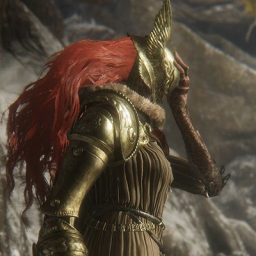
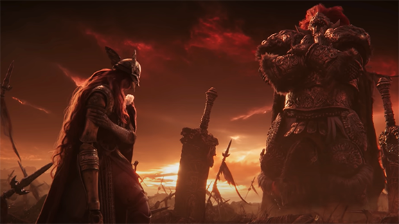
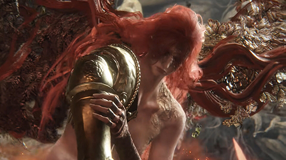

Malenia was born with her twin Brother Miquella as Empyreans to Queen Marika and King Radagon. She was born with the Scarlot Rot, an affliction that cost her several limbs as it ate at her body from within. She then encountered a blind swordsman who sealed away the scarlot rot within her, he then became her master who trained her in the ways of the blade. Before to long she had surpassed him and became a warrior without an equal. Miquella eventually designed a needle of unalloyed gold that would keep the Scarlet Rot from claimig any more of her body.
After the Shattering Malenia claimed a shard of the broken Elden Ring. During the wars between the Demigods that followed the Shattering, Malenia led an army that marched south from the Haligtree. Upon winning multiple battles she went against another Demigod and shardbearer Godrick the Grafted leaving him begging at her knees, doing this she attracted many loyal servants as well as worshippers who believed her to be a goddess.
Malenia would eventually meet her half-brother and shardbearer Radahn. Their forces met in the Caelid Wilds, the two clashed swords in a final fight for supremacy. Melania unable to beat Radahn with skill alone resorted to unleashing the Scarlet Rot within her destroying the surrounding area leaving the Caelid Wilds a rotting wasteland. Radahn was left a husk of his formerself forced to wander the battlefield as a mindless beast who didn't know foe from friend attacking and consuming both without regard.
When the player reaches the base of the Haligtree they will confront Melania in her arena.She will be found sitting reaching to the base of the tree toward the spot her brother used to be, she will then introduce herself and the fight will begin. It's a two phase fight where in the first phase she will slowly advance toward the player and use her sword for wide ranging swings she also has the ability to close distance quickly with leaps. In the second phase she will erupt in her Scarlot Aoenia once more becoming Melania Goddess of Rot growing wings made out of butterflies in the process. She becomes more aggressive in the second phase where most attacks also deal Scarlet Rot as well as physical damage. Upon defeat she leaves a bloomed Scarlot Aoenia in the arena
Images
content
Images were found on google, all in engine images or promotional material and content was taken from the Elden Ring Fandom Wiki